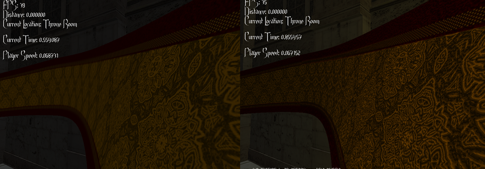
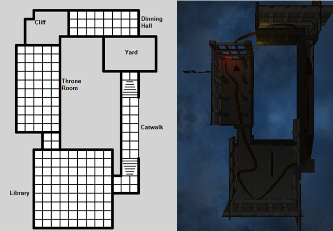

C++ Opengl Graphics Project
For this project the aim was to implement different graphical techniques such as normal mapping, reflections, lighting and spline based geometry. I created a mesh handling system to create prefabs such as walls and entry ways so that they perform efficiently.




This project was less about making a cohesive scene and more about the implementation itself, writing our own GLSL shaders and buffer objects to load straight into the GPU, I was mainly focused on getting good performance while implementing these techniques and am relatively happy that aspect however as a whole the time constraint is very visible.